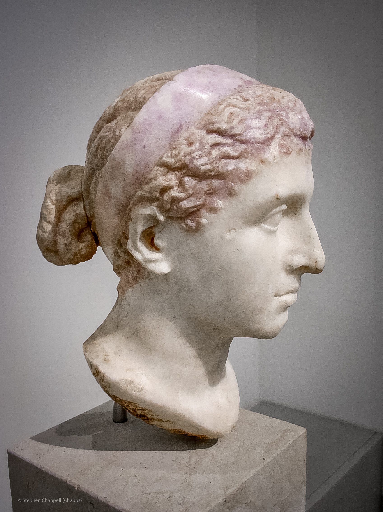
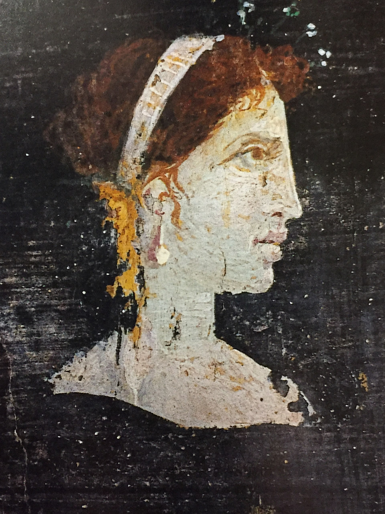

Cleopatra VII Philopator
Queen of Egypt · Alexandria

You are not a composite. Every other life in this roll was assembled out of demographic tables and the dust of a thousand ordinary people. You are one person, and you existed. The dice were never supposed to land here — you are the throw that comes up once in a million, the exception that proves how crushingly ordinary almost every Roman life really was. You are Cleopatra VII Philopator, last ruler of the Ptolemaic dynasty, last Pharaoh of Egypt.
The house you were born into. You are Macedonian Greek, not Egyptian by blood — your line descends from Ptolemy I Soter, one of Alexander the Great'sgenerals, who took Egypt when Alexander's empire was carved up after 323 BC.For nearly three hundred years your family has ruled from Alexandria, thegreatest city of the age: the Lighthouse on Pharos, the Library and theMuseum, a harbour that feeds Rome its grain. The Ptolemies are also abyword for murder. Siblings marry siblings and then kill them; your own history is a ledger of poisonings and exiles. You will play that game better than any of them.
A childhood among Romans and creditors. You are born around 69 BC, a daughter of Ptolemy XII — nicknamed Auletes, the flute-player — a king who keeps his throne only by borrowing staggering sums from Roman financiers and buying the favour of Roman senators. You grow up watching Egypt's independence leak away to Rome one loan at a time. You are formidably educated. Plutarchsays you are the first of your entire dynasty to bother learning Egyptian, andthat your voice was an instrument you could turn to many languages — Greek, Egyptian, and the tongues of Ethiopians, Hebrews, Arabs, Syrians, Medes and Parthians, with rarely a need for an interpreter.
Caesar. Your father dies in 51 BC and leaves the throne to you, about eighteen, jointly with your younger brother-husband Ptolemy XIII, about ten. It is no partnership; his courtiers drive you out. Then Rome's own civil war spills onto your shore: Pompey the Great, fleeing Julius Caesar, is murderedon the Egyptian beach as he steps from the boat. Caesar arrives in pursuit and you have yourself smuggled to him through the palace — the story says rolled inside a bedsack. You win him. Ptolemy XIII drowns in the Nile during the war that follows; you bear Caesar a son, Caesarion, in 47 BC; and you spend his last years partly in Rome as his guest, until the daggers of the Ides of March,44 BC, send you home.
Antony. With Caesar dead, Rome is fought over by his heir Octavian and hislieutenant Mark Antony. In 41 BC Antony summons you to Tarsus and you arrive ona barge with gilded stern and purple sails, rowed to the sound of flutes — a piece of theatre Plutarch could not stop describing. For a decade you and Antony are allies and lovers against Octavian. You have three children with him: the twins Alexander Helios and Cleopatra Selene, and Ptolemy Philadelphus.At the Donations of Alexandria in 34 BC, Antony parcels out Rome's easternprovinces to your children as kings and queens — a gift that hands Octavian the propaganda he needs: a Roman general giving away the Republic to a foreign queen.
The end. It comes apart at sea. In 31 BC your combined fleet is broken at Actium off the coast of Greece, and you and Antony flee back to Egypt. The following summer Octavian's army reaches Alexandria. Antony, told falsely that you are already dead, falls on his sword. You are captured, and rather than be led through Rome in Octavian's triumph you take your own life — by tradition the bite of an asp, the Egyptian cobra, though poison is just as likely. You die in August of 30 BC, thirty-nine years old. Caesarion, Caesar's son and your co-ruler, is hunted down and killed; "two Caesars are too many." Egypt becomes a Roman province, its grain and gold the foundation of the empireOctavian will rule as Augustus.
How you were remembered. The victors wrote you down. To Augustus's poets you are the drunken Eastern sorceress who unmanned a Roman, a danger the Republic was saved from — and that portrait, not the able administrator, naval commander and polyglot diplomat who nearly bent Rome's civil wars to Egypt's advantage, is mostly what survived. Only one of your children outlived the conquest in freedom: Cleopatra Selene, married off to King Juba II ofMauretania, who named her own son Ptolemy and kept your dynasty's memoryalive at the far western edge of the Roman world. The dice will almost certainly never bring anyone here again.

What shaped this life
Three centuries of Ptolemaic dynastic murder, the bottomless wealth of Egypt that Rome could not stop coveting, the death-throes of the Roman Republic, and the Augustan propaganda machine that decided how you would be remembered. And, more than any of it: the simple, vanishing improbability of being you at all rather than one of the millions who left no name.
- Cleopatra (VII)
- Ptolemaic Kingdom
- Ptolemy XII Auletes
- Caesarion (Ptolemy XV)
- Mark Antony
- Donations of Alexandria (34 BC)
- Battle of Actium (31 BC)
- Cleopatra Selene II
- Library of Alexandria
The images above are real museum artifacts and photographs, or commissioned illustrations; full attribution on the credits page.